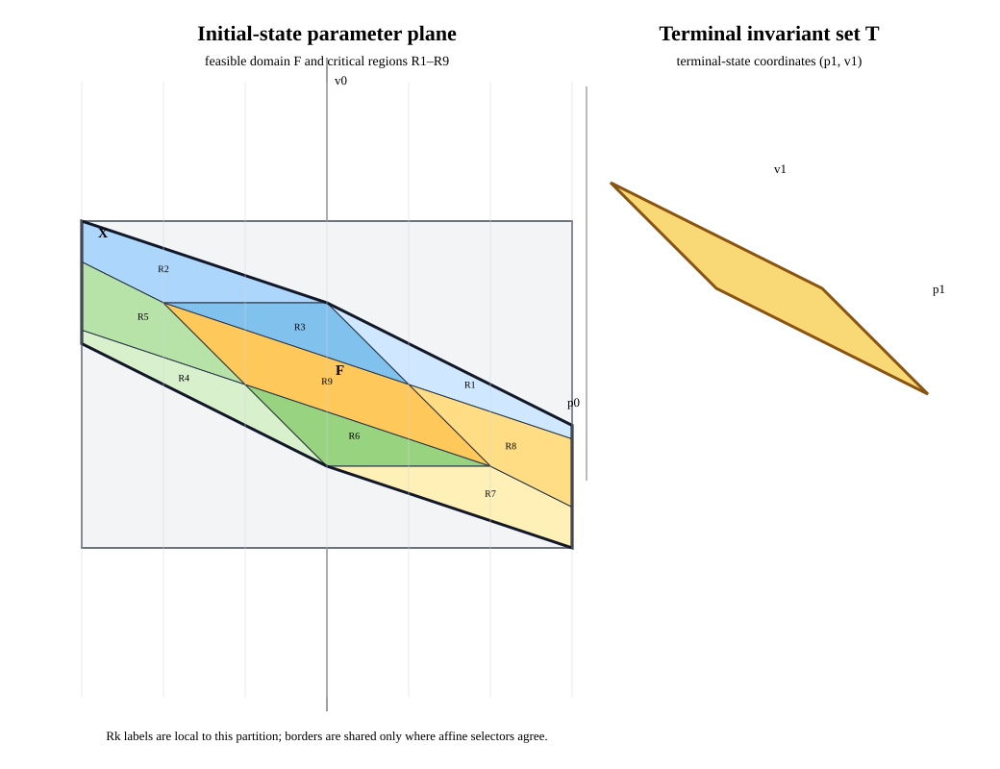

MPC-08 · exact one-step analytic pilot · source a3a6f090c2e5
Explicit MPC and the feasible-state geometry
This pilot keeps four products distinct: feasible initial states F, the invariant terminal set T, the explicit value and first action, and CSL's fixed-initial candidate history relation.

X, feasible domain F, and nine control regions. Right: the separate invariant terminal set in terminal-state coordinates.Fixture and exact result
One-step double integrator: p1=p+v, v1=v+u, u∈[-1,1], initial box X=[-3,3]×[-2,2], terminal set |p1+2v1|≤1, |p1+v1|≤1, terminal-only objective p1²+v1².
Exact rational elimination gives feasible area 21/2 and 9 critical regions with 34 total polygon edges. Region area coverage, positive-area overlaps, and shared-boundary control agreement are checked over rational half-spaces. The solver validation set has 45 exact points from region centroids, vertices, and edge midpoints.
Fixed-initial observations
| Path | Calls | Median | Range | Observed result |
|---|---|---|---|---|
| Strategy A reach-back candidate | 225 | 2.043 ms | 1.922–2.416 ms | Candidate contains exact analytic history at all points. |
| Strategy B direct-joint candidate | 225 | 0.472 ms | 0.381–0.550 ms | Candidate contains the history; Q017 numerical failures are retained. |
| Condensed online scalar QP | 225 | 0.321 ms | 0.302–0.359 ms | Exact-reference first action and independently recomputed value. |
Each method has one warmup and five interleaved measured calls per point. Timings include the path-specific work stated in the report README; these paths return different products. No timing winner is claimed.
Evidence limits
Strategy A/B records check whether a candidate relation contains the analytic unique history for one fixed initial state; they do not establish a complete family. The online QP returns a scalar input, so its record reports action/value agreement, not history-relation membership. Strategy B's numerical failures at Q017=(-1,0) remain in raw data. The exact new fixture has a unique scalar control; the separate T-S01 nonunique-history case is not rerun here.
This pilot makes no disturbance, robust-predecessor, minimax, scaling, region-explosion, or approximation claim. The comparisons remain inconclusive for performance.